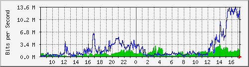
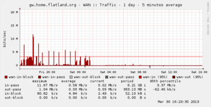
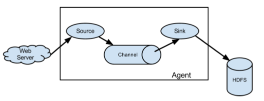

Hadoop for DevOps
Type T to begin the slide show.
Table of Contents
Hadoop for DevOps
Steven Byrnes
Notes
When working on this presentation, I realized the presentation was a little ambiguous? Am I talking about DevOps for maintaining a Hadoop cluster, or am I talking about leverage Hadoop for DevOps work. This talk will cover the latter.
We will be discussing leveraging Hadoop, and HBase, for capturing server information. In other words, we have a cluster, or clusters, running a variety of workloads. How do we keep an eye on that, what really does that entail, and how can we scale it?
We will cover a few tools that directly or indirectly can be used to process system level data - logs and system measurements - and store them in Hadoop or HBase.
Problems
- Numbers
- Monitoring
- Capacity planning
- Text
- Logs
Notes
We need to monitor numbers. Why? SLAs. Capacity planning. What is acceptable performance? What do we deem to be proper resource utilization? How many users is too many? How big is the work queue? What are the current numbers? And how fast are they growing? (We need the latter for capacity planning.)
What do I mean by logs? We run applications. It could be one big one. Or lots of them with different owners. Odds are, they generate output. Some of it is structured, some semi-structured, and some of it totally unstructured. Probably all of the above. Examples: web server logs, Hadoop output, servers themself. So we have analytic information, errors, and other metrics.
We typically want to process it real-time, or semi-real time. And we want to explore the data real time.
Suppose we're watching a cluster. We need to track thousands of metrics across hundreds or thousands of machines. Some every second. And the logs… oh the logs…
How did we deal with it before?
MRTG

The Multi Router Traffic Grapher - Usenix, December 1998
Notes
Graphing like it's 1998!
This was awesome when it first came out, and still serves its purpose. The techniques use internally led to… RRDTool.
RRDTool -based products
Round Robin Database

1 day, 5 minute average
1 week, 1 hour average
A TSDB
Notes
TSDB = Time Series Database.
Round Robin Database. What does that mean? For the use cases of MRTG and the ilk, you want to see what your load looked like today, but you also want to capture long term trends. Is my network becoming more busy? Is my disk slowly filling up. Problem is that can cause unbounded expansion of data. (And back in the megabyte scale era, this was a bigger deal.)
RRD is a Time Series Database; TSDB. Basically, when you create it, you specify your sample periods. Suppose you capture data once a minute. With RRD, you can roll up the data in 5 minute increments for a day, and 1 hour increments for a week. And it's constant space. Which is really cool. One less thing to think about. (You don't want your system monitoring to cause you extra system monitoring issues.) And it gives you long term trends.
But what if you want a 1 month period? And you didn't specify it when you created it? Bummer…
Or this happens: a prod issue lands on your desk. You need to look into a problem. Requires 1 minute granularity from last week? LOL!
Lots of other choices
- Zenoss
- Nagios
- Cactii
- Syslog, grep?
- Splunk
Notes
Some of these are all-in-one products that are extensible, have plugins, training, etc. Some you have to combine with other products.
Problems: data locked in there. For example, web access logs. Those are handy, and have their own tools. But suppose you have other things… diagnostics. Errors. Might want to track those. Want to cross correlate different things. Web response time, network traffic, and database IO.
Also… traditional tools can have scalability problems. Use traditional databases, for example.
Textual stuff you want to search or act on. Numeric information, or information you can turn into numbers, that you want to graph.
Syslog? Grep? Logging like it's 1988! Seriously…
Splunk? A good solution, from what I've heard, for certain issues.
Solutions
What we would like
- more data
- more flexible graphing. I want to see my web request latency vs my database latency. And maybe some other metric combo I just thought of
- basically, more cowbell!
Hadoop FTW!
Notes
What do I want? Well… ideally not have have server or app problems. But that's not going to happen.
So let's talk about solutions. Since this is a Hadoop meetup, we'll focus on things in the Hadoop ecosystem, or that work around the edges.
Since we've got big data technologies, ideally I'd want more data. No downsampling. More flexible graphing. I want to see my web request latency vs my database latency. And maybe some other metric combo I just thought of. Basically, more cowbell!
Ultimately, this becomes a message passing, processing, and recording problem. Events are generated on a server in a cluster, and we need to capture it and store it somewhere. So some of the solutions ultimately are message queue products, albeit ones targeting this space.
Meta-irony: if you have sufficiently large Hadoop, or other, cluster it might be driving your needs to track lots of things…
And as an aside, one of the core use cases for Hadoop was log processing to assist with ad placement.
OpenTSDB
- Runs on HBase
- No downsampling
- Originally written by StumbleUpon
- Written to store and query metrics across clusters
- Large scale
- Hundreds of thousands of time series
- Billions datapoints… per day!
Notes
Quite a few companies use it. Box. Tumblr. StumbleUpon of course.
HBase manual even mentions OpenTSDB as a way to monitor your HBase.
OpenTSDB - Components

(from opentsdb.net)
Notes
tsd = Time Series Daemon. Writes the metrics to HBase. Also provides web interface for querying.
Other components: tcollector. Talks to the time series daemon. Will run scripts, de-dup, send to TSD, handle disconnections. Scripts just have to write output to standard output. It can be as simple as a 1 or 2 line shell script!
What is a metric?
- name
- Unix timestamp (second resolution; millisecond in forks and next version)
- value (64 bit integer or floating point number)
- 0 or more key-value tags
Example:
mysql.connections 123400000 200 host=db1 env=production
Notes
Anything that can be expressed as a number can be a metric. Databases, number of users, network statistics, etc.
Tags can have anything, like host, environment (prod vs qa), etc.
How big are they? How much space? 100 billion points is about 1 TB. (Using LZO compressed HBase tables.) About 12 bytes per data point.
There is support for purging old data if you don't want to store data forever. But there are people out there storing a trillion data points.
Demo - OpenTSDB
Notes
Quick start once HBase and OpenTSDB are installed.
Start (single node) HBase (in HBase directory):
./bin/start-hbase.sh
Create tables if necessary (in opentsdb directory):
env COMPRESSION=none HBASE_HOME=../hbase-0.94.4 ./src/create_table.sh
Examine tables:
../hbase-0.94.4/bin/hbase shell describe 'tsdb' describe 'tsdb-uid'
Start tsdb:
tsdtmp=${TMPDIR-'/tmp'}/tsd
mkdir -p "$tsdtmp"
./build/tsdb tsd --port=4242 --staticroot=build/staticroot --cachedir="$tsdtmp"
Look at web interface:
open http://localhost:4242
Ok… now add some metrics:
./build/tsdb mkmetric some.stat1 some.stat2
(Show auto completion in web interface)
Or, alternatively, add a bunch for self monitoring:
echo stats | nc -w 1 localhost 4242 \
| awk '{ print $1 }' | sort -u \
| xargs ./build/tsdb mkmetric
Now load up data (script to be provided in github):
../hbase-examples/genstats.pl | nc -w 2 $me 4242
Look at interface for past 10 minutes. Set to auto refresh every 5 seconds. Now, load up a lot, then start loading continuously.
../hbase-examples/genstats2.pl| wc -l 1,209,602 ../hbase-examples/genstats2.pl| nc -w 1 localhost 4242 ../hbase-examples/genstats.pl|nc -w 1 localhost 4242 while true do ../hbase-examples/genstats.pl|nc -w 1 localhost 4242 sleep 4 done
Simple log processing
- Upload logs into HDFS
- External Hive table
- Done!
Notes
Example from interweb:
CREATE EXTERNAL TABLE events ( id bigint, received_at string, generated_at string, source_id int, source_name string, source_ip string, facility string, severity string, program string, message string ) PARTITIONED BY ( dt string ) ROW FORMAT DELIMITED FIELDS TERMINATED BY '\t' STORED AS TEXTFILE LOCATION 's3://your-s3-bucket.yourdomain.com/papertrail/logs';
It works, it's simple, but it's a one shot thing. Wouldn't want to continuously do this necessarily. It works, but not the most scalable thing.
Scribe
- Started by Facebook
- Log aggregation
- Needs other tools
- https://github.com/facebook/scribe
Notes
Facebook, Twitter, Zygna.
WWFD (What would Facebook Do?) They wrote Scribe.
"Scribe is a server for aggregating log data that's streamed in real time from clients. It is designed to be scalable and reliable."
May be abandonware. (No updates in over a year.)
Not out of box solution.
Kafka
- Apache project. Started by LinkedIn
- Pub sub messaging
- Used to move activity stream data (i.e. what's in logs) into Hadoop
- http://kafka.apache.org/
Notes
Competes with Scribe and Flume, but has messaging semantics.
Persistent messaging.
Can load into HDFS. However, out of box, needs code or log4j config to generate messages. (If you don't use log4j… well… sorry.)
Useful if you control your applications' code.
Flume
- Apache project. Started by Cloudera
- Sources and sinks
- Sources include files, syslog, network port, Avro, and Scribe!
- Sinks include Avro, HDFS, HBase, ElasticSearch, and IRC!
- http://flume.apache.org/

Notes
"Apache Flume is a distributed, reliable, and available service for efficiently collecting, aggregating, and moving large amounts of log data. Its main goal is to deliver data from applications to Apache Hadoop's HDFS. It has a simple and flexible architecture based on streaming data flows. It is robust and fault tolerant with tunable reliability mechanisms and many failover and recovery mechanisms. It uses a simple extensible data model that allows for online analytic applications."
Since sources and sinks support Avro, you can chain them and create a hierarchy of agents.
Centralized configuration? Centralized liveness monitoring?
Demo - Flume
Notes
The following example loads some Apache web server logs into HBase. No extraction of data from the logs is attempted: each line is just stored as a literal value in HBase. There is an "interceptor" that can use regular expressions to parse and pick apart structured data and store it into separate HBase columns.
First, created a simple HBase table:
create 'log_table',
{NAME => 'some_cf', VERSIONS => 1, COMPRESSION => 'NONE', BLOOMFILTER => 'ROW'}
Then, used the following simple agent configuration:
# flume-hbase.conf: A single-node Flume configuration that writes to HBase. Reads from Syslog. # # To start: # # ./bin/flume-ng agent --conf-file ~/examples/demo-flume/flume-hbase.conf --name a2 --conf ./conf # # Name the components on this agent a1.sources = r1 a1.sinks = k1 a1.channels = c1 # # spooldir source type # # Renames files to .COMPLETED a1.sources.r1.type = spooldir a1.sources.r1.spoolDir = /var/log/apache/flumeSpool a1.sources.r1.fileHeader = true # # Define a source interceptor # a1.sources.r1.interceptors = i1 a1.sources.r1.interceptors.i1.type = timestamp a1.sources.r1.interceptors.i1.preserveExisting = true # # Logger sync # # a1.sinks.k1.type = logger # # HBase sync # a1.sinks.k1.type = org.apache.flume.sink.hbase.HBaseSink a1.sinks.k1.table = log_table a1.sinks.k1.columnFamily = some_cf a1.sinks.k1.serializer = org.apache.flume.sink.hbase.RegexHbaseEventSerializer # Use a channel which buffers events in memory a1.channels.c1.type = memory a1.channels.c1.capacity = 1000 a1.channels.c1.transactionCapacity = 100 # Bind the source and sink to the channel a1.sources.r1.channels = c1 a1.sinks.k1.channel = c1
Logstash
- Log shipper
- multiple inputs, filters and outputs
- Outputs include OpenTSDB
- Swiss Army Knive at log handling
Notes
Doesn't directly deal with Hadoop ecosystem, but I'm highlighting it for its log shipping abilities, and its ability to interoperate with a wide variety of inputs and outputs. In the case of outputs, it can send information to OpenTSDB. (In which case you'll want to use a filter to extract information from the logs that can be turned into a metric suitable for OpenTSDB.)
It's a Swiss Army Knive… maybe too much of a Swiss Army Knife!
Demo - Logstash
Notes
Logstash example is a little too chatty for notes; see github for details. I ran it with an embedded Elastic search. Once it starts up (which can take a minute or 3), you can point browser at http://localhost:9292/ and start searching away…
Other solutions
(Non-comprehensive list)
- Logster
- StatsD
- Fluentd
- Many different visualizations (Cubism, …)
Notes
These don't necessarily directly interop with HDFS, HBase, or OpenTSDB, but have plugins or otherwise can feed data. A whole lot of it is role your own.
Facebook does it. But when you're dealing with petabytes of data, you're probably used to rolling your own stuff.
Future Work
Great! So now what?
Notes
This is great. We can capture server telemetry. We can process and search it near-real-time. We can graph real time. And since we're using Hadoop or HBase backing stores, we can scale out and deal with large clusters of servers. We can even use these tools for monitoring Hadoop itself.
But we're missing some things with what I've shown. We don't have out of the box alerting. Disk filling up. Host going down. That kind of thing.
Logstash can feed data to Rieman, Ganglia and the website Pagerduty. Those can be used for alerts. Riemann you can do more complex processing with your event stream. There are people doing the same thing with OpenTSDB, but it's in forks, or they intercept the metrics before they hand them to OpenTSDB. Version 2.0 should add easier pluggability for feeding your metric stream to other places.
And speaking of OpenTSDB, there are some limitations. Second granularity of events. For some users, you need millisecond. That's coming in version 2.0 too. (There are forks out there that support it already.)
Other blue sky stuff: feed events into Storm and do Complex Event Processing (CEP) or machine learning. Maybe figure out things for us, or allow dynamic workload tuning?
Conclusion
Notes
We did a high level overview of some of the tools available for processing logs and analyzing statistics.
I've focused on some of the more low level tools that directly talk with Hadoop / HBase. There are tools that have been adapted to work on top of these and provide a nicer front end. Things like Graphite, which does graphing.
Since the data is in Hadoop / HBase, you can then process it with tools like Pig, Hive, Cascalog, or even R.
Mostly, most of these aren't plug in play solutions. They're more like tinker toys: you get a bunch of pieces. What you build is up to you.
We mostly looked at the analisys end. Traditional system monitor tools also perform alerting. Plugging in tools into the messaging buses some of these tools support, like Avro for Flume or Redis for Logstash, one could construct very complicated real-time workflows to deal with large clusters.
Resources
- OpenTSDB
- Flume
- Logstash
- Kafka
- Scribe
- Logster
- StatsD
- Graphite
- Riemann
- Flume User Guide - seems more up to date than HTML version?
- Hadoop Analysis of Apache Logs Using Flume-NG, Hive and Pig
- Running the largest Hadoop DFS cluster - Facebook
- Flume and HBase
- http://axonflux.com/how-facebook-uses-scribe-hadoop-and-hive-for